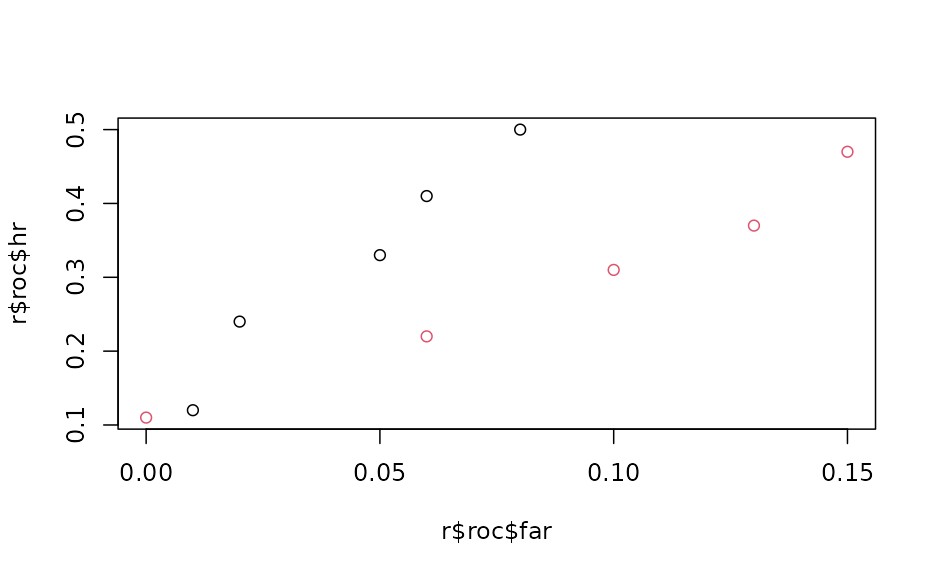
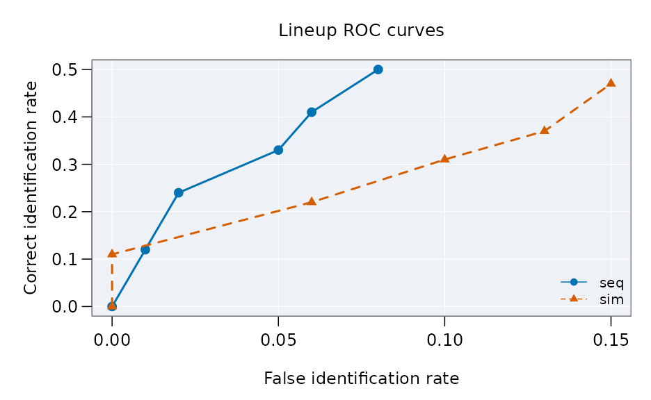

Eyewitness identification, toxicology and taphonomy
Source:vignettes/eyewitness-and-toxicology.Rmd
eyewitness-and-toxicology.RmdLineup performance, calibration of a toxicology method, post-mortem redistribution and the time since death.
Each section is one help page: what the function is for, the example
of its help page as it runs, and the plot of its result where the
package draws one. ?name gives the arguments and the value
in full.
Eyewitness identification
Eyewitness lineups: ROC curves, partial areas and confidence-accuracy
lnroc(): Asks how well a lineup procedure lets witnesses
tell the culprit from an innocent suspect, and how much a witness’s
confidence is worth. Each witness saw a lineup that held the culprit
(target present, tp) or did not (target absent), picked the
suspect, a filler or nobody (pick), and stated a confidence
(conf, higher is surer). Counting only the identifications
made at confidence c or above gives, at each cut
c from the highest down, the hit rate (suspect
identifications in target-present lineups over those lineups) and the
false alarm rate (innocent-suspect identifications in target-absent
lineups over those lineups). The points trace the receiver operating
characteristic (ROC) of Mickes, Flowe and Wixted (2012); a procedure
whose curve lies higher discriminates better. When target-absent lineups
have no designated innocent suspect, give the lineup size:
every identification in a target-absent lineup then counts, divided by
size (the rate at which an innocent suspect would be picked
in a fair lineup).
set.seed(3)
n <- 400
tp <- rep(0:1, each = n / 2)
proc <- rep(c("sim", "seq"), n / 2)
ch <- c("suspect", "filler", "none")
pick <- ifelse(tp == 1, sample(ch, n, TRUE, c(0.5, 0.15, 0.35)),
sample(ch, n, TRUE, c(0.1, 0.3, 0.6)))
conf <- ifelse(pick == "none", NA, sample(1:5, n, TRUE))
r <- lnroc(tp, pick, conf, proc = proc, nboot = 200, seed = 1)
r$pauc
#> proc pauc se lo hi diff dse p
#> 1 seq 0.02375 0.006495450 0.011019152 0.03648085 0.000 NA NA
#> 2 sim 0.01475 0.004086343 0.006740914 0.02275909 -0.009 0.007738077 0.2447972
plot(r$roc$far, r$roc$hr, col = factor(r$roc$proc))
plot(r)
Fairness of a lineup from mock witnesses
lnsize(): Asks whether a lineup singles out its suspect.
People who never saw the crime (mock witnesses) read the witness’s
description and pick the lineup member who fits it best; in a fair
lineup of k they pick each member about equally often. A
choice of 0 records a mock witness who chose no one. With n
mock witnesses, m of whom chose a member, and
o_i the choices of member i:
# 40 mock witnesses, a lineup of six, the suspect in position 3
ch <- c(rep(3, 15), rep(1, 5), rep(2, 6), rep(4, 4), rep(5, 7), rep(6, 3))
lnsize(ch, k = 6, susp = 3)
#> lnsize: 40 mock witnesses, lineup of 6, suspect in position 3
#> n k nm psusp pbin fsize
#> 40.000000000 6.000000000 40.000000000 0.375000000 0.001282306 2.666666667
#> esize esizeb etr etrlo etrhi
#> 4.700000000 4.700000000 4.444444444 3.345535088 6.618389805Toxicology and taphonomy
Calibration line of an assay
txcal(): Fits the calibration line of a quantitative
assay (the response, an analyte to internal standard peak-area ratio
say, against the known concentration of each calibrator) by weighted
least squares, and reads unknown samples off it. Weights
1/x^2 or 1/x keep the precise low calibrators
from being swamped by the high ones, as is usual when the error grows
with the concentration. The limits of detection and of quantitation
follow the calibration-curve rule of ICH Q2: k[1] and
k[2] (3.3 and 10) times the residual standard error over
the slope.
conc <- c(5, 10, 25, 50, 100, 250)
resp <- c(0.051, 0.098, 0.26, 0.49, 1.02, 2.47)
txcal(conc, resp, unk = c(0.03, 0.6))
#> $fit
#> int slope r2 sigma lod loq
#> 0.0005578058 0.0100118968 0.9990611257 0.0002794509 0.0921092214 0.2791188527
#>
#> $unk
#> resp conc flag
#> 1 0.03 2.940721 quantifiable
#> 2 0.60 59.872990 quantifiable
#>
#> $w
#> [1] "1/x^2"Values below the limit of detection
lodimp(): Substitutes the values of an assay that fall
below the limit of detection (left-censored) by a fraction of that
limit: lod / 2, lod / sqrt(2) (Hornung and
Reed 1990) or lod itself. A value not measured
(NA) stays NA and is not counted as censored.
Substitution is the simple choice; with much censoring it biases the
mean and the spread.
Postmortem redistribution ratio
pmrrat(): After death drugs move from organs into the
central blood vessels, so that heart blood can read well above the
concentration at death. The ratio of the central (heart) to the
peripheral (femoral) concentration flags it: at most cut[1]
(1) minimal, at most cut[2] (2) modest, above that
significant, when the peripheral value is the better guide to the
concentration at death.
Ethanol in a decomposed body: drunk before death or made after
etohlr(): Microbes make ethanol in a body after death,
and with it the higher alcohols n-propanol and n-butanol; ethyl
glucuronide, a metabolite, is made only by a living body. So for each
case: ethyl glucuronide present (above 0) says the ethanol was taken
before death; otherwise a higher alcohol above thr says it
was (at least partly) made after death; otherwise the signals do not
decide.
Reliability of specimen matrices in a submerged or decomposed body
mtxrel(): Ranks the specimen matrices of a case
(vitreous humour, liver, femoral blood) by how far their results can be
trusted. Each matrix starts from a reliability in a fresh body,
base, which the user sets from the literature for the
analyte at hand; decomposition lowers every matrix by
stage / smax, at most by scap, and water
dilutes the matrices marked dil (blood, urine) by a further
days / dmax, at most dcap. A transparent
ordering, not an estimate.
Decay chain of a body
tpdmc(): A discrete-time Markov chain of decomposition:
from each transient stage (fresh, bloat, active and advanced decay, or
the user’s own stages) a body advances to the next stage with
probability decay * (1 - pres) (after the last, to
skeletal), mummifies with probability mum * pres, and
otherwise stays. pres is the strength of what preserves the
body (aridity, quicklime, a sealed casket), 0 for none. From the
fundamental matrix come the probability of ending skeletal or mummified
from each stage and the expected steps to get there. With no
preservation nothing mummifies, so the column mummified of
absorb is also the change in the chance of mummifying that
the preservation makes. With steps above 0 one path is
drawn from start.
Bayesian preservation model
tpbhm(): A Bayesian linear model of a preservation score
(or any outcome) on burial conditions and measurements, with a normal
prior on each coefficient and the noise variance fixed at the
least-squares residual variance (an empirical Bayes plug-in), so that
the posterior is normal in closed form. An informative prior on a
treatment (say, that quicklime preserves) is set through pm
and psd, and the data revise it. With groups (cemeteries,
sites) the mean residual of each group is shrunk towards 0 by the method
of moments: tau2 is the variance between the group means
beyond what the noise explains.
set.seed(1)
d <- data.frame(lime = rbinom(30, 1, 0.5), temp = rnorm(30, 12, 3))
y <- 0.3 + 0.2 * d$lime - 0.01 * d$temp + rnorm(30, sd = 0.05)
tpbhm(y, d, grp = rep(c("a", "b", "c"), 10), pm = c(0, 0.2, 0))$coef
#> term mean sd lo hi ppos prior
#> 1 (Intercept) 0.173071063 0.045858883 0.08318930 0.262952821 0.9999197 10
#> 2 lime 0.184805792 0.016328473 0.15280257 0.216809011 1.0000000 10
#> 3 temp 0.001683087 0.003552176 -0.00527905 0.008645224 0.6821854 10Log-ratio transforms of compositions
clrilr(): Element shares from portable X-ray
fluorescence of bone or soil, or any parts of a whole, live on the
simplex: they sum to one, and ordinary statistics on the raw shares
mislead. The centred log-ratio ("clr") takes each part’s
log over the geometric mean of its row; the isometric log-ratio
("ilr", Egozcue et al. 2003) gives d - 1
coordinates in an orthonormal basis (the default pivot basis: coordinate
i contrasts the first i parts with part
i + 1), on which the usual methods apply. Each row is
closed to sum 1 after ps is added to every part, so that a
part below the detection limit (0) has a log.
x <- rbind(c(Ca = 60, P = 25, Fe = 10, Zn = 5),
c(Ca = 80, P = 12, Fe = 6, Zn = 2))
clrilr(x)
#> Ca P Fe Zn
#> [1,] 1.288034 0.4125649 -0.5037257 -1.196873
#> [2,] 2.044066 0.1469466 -0.5462005 -1.644812
clrilr(x, "ilr")
#> ilr1 ilr2 ilr3
#> [1,] 0.6190499 1.105557 1.382030
#> [2,] 1.3414664 1.340448 1.899266Simulated compositions from a Dirichlet distribution
dirsim(): Compositions that are closed (each row sums to
total) and positive, such as the element shares a portable
X-ray fluorescence scan reports, drawn from the Dirichlet distribution
with concentrations alpha: each part is a gamma variate of
shape alpha[j] and rate 1 divided by the sum of its row.
Normal noise is the wrong model for such data, as it leaves the simplex.
The draws are for testing a compositional analysis before real
measurements exist (clrilr(), tpbhm()), never
a substitute for them. The mean share of part j is
alpha[j] / sum(alpha); larger concentrations give less
spread around it.
# a calcium-rich profile and a natural one, in parts per million
lime <- c(Ca = 85, P = 5, Fe = 2, Sr = 0.5, Pb = 0.2, Zn = 0.2)
soil <- c(Ca = 30, P = 15, Fe = 5, Sr = 1, Pb = 0.5, Zn = 0.5)
x <- rbind(dirsim(5, lime, 1e6, seed = 1), dirsim(5, soil, 1e6, seed = 2))
round(x)
#> Ca P Fe Sr Pb Zn
#> [1,] 916028 64989 9709 8530 338 406
#> [2,] 924519 59016 10998 3742 1585 139
#> [3,] 926699 55681 13866 7 343 3403
#> [4,] 948999 41626 6514 75 0 2786
#> [5,] 918903 38403 34643 7958 93 0
#> [6,] 545725 298947 82563 67504 1473 3788
#> [7,] 656421 315410 24984 307 2854 24
#> [8,] 490101 333923 148857 25907 52 1160
#> [9,] 549398 336330 94906 4794 858 13714
#> [10,] 553314 280049 72463 29418 2497 62259
clrilr(x)[, "Ca"]
#> [1] 4.582492 4.644030 5.378437 6.646381 6.411516 2.577556 4.556793 3.286704 2.856785
#> [10] 2.205577